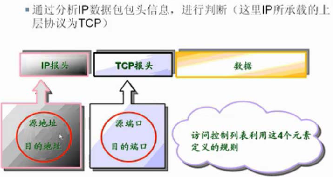

1、概述
访问控制列表（ACL）：应用于路由器接口的指令列表，用于指定哪些数据包可以接收转发，哪些数据包被拒绝访问。
2、访问控制列表原理
访问控制列表主要是靠包过滤技术实现安全控制，它们能够检查源IP地址、目标E地址、网络层报头的协议（protocol）字段、传输层报头中的端口号。通过这此策略过滤数据包。

3、访问控制列表数据处理过程

访问控制列表是顺序处理列表信息的，数据进入访问控制列表后逐条匹配，如果所有列表都不匹配，默认拒绝此数据包。
4、访问控制列表的方向
在接口模式下：
ip access-group 访问列表号 in|out
使用此列表将访问控制列表应用于该接口的入站或出站方向
ACL必须应用于接口，否则不能发挥作用。而每个接口都有入站与出站方向：
入站访问控制列表：将访问控制列表应用于入站口时，将根据访问控制列表对这些数据包进行处理，然后将其路由到出站接口。遭到拒绝的数据包不会被路由，因为在调用路由选择进程前，它们已被丢弃。

出站访问控制列表：将访问控制列表应用于出站口时，数据包将首先被路由到出站接口，然后再将数据包根据访问控制列表对其进行处理。

二、访问控制列表语法
1、基本语法
第一步：创建访问控制列表
Router(config)#access-list 1 deny 192.168.10.100 0.0.0.0 #定义访问控制列表1
#拒绝某一个IP访问，访问控制列表使用反掩码
Router(config)#access-list 1 permit 0.0.0.0 255.255.255.255
#允许剩下所有IP地址访问，因为ACL是顺序执行的
#ACL默认是拒绝所有数据包的，所以在一张访问控制列表中必须有允许的条目，否则访问控制列表会拒绝所有数据
第二步：应用访问控制列表到某一个接口的某个方向
Router(config)#interface f0/1
Router(config-if)#ip access-group 1 out #把列表应用于f0/1接口的出站方向
2、通配符
1）通配符any
通配符any代表所有IP地址，可以用来取代 0.0.0.0 255.255.255.255
Router(config)#access-list 1 permit 0.0.0.0 255.255.255.255
可以写为
Router(config)#access-list 1 permit any
2）通配符host
通配符host代表一个特定的IP地址
Router(config)#access-list 1 deny 192.168.10.100 0.0.0.0
可以写为
Router(config)#access-list 1 deny host 192.168.10.100
三、访问控制列表分类
1、访问控制列表的分类：
标准访问控制列表：访问控制列表号为1-99，只基于源IP地址的数据包是否可以通过。如果拒绝，只能拒绝整个IP地址的访问，而不能区别数据类型（如web、ftp等）
扩展访问控制列表：列表表号100-199。可以靠源IP，目的IP，协议类型和端口号来控制数据包

不同访问控制列表应用方向也会有不同，总体原则是如果需要禁用数据包应该在数据包占用过多带宽与路由资源之前就禁用。
但是如果是标准ACL，只能在路由器D的E0口（进站方向）设置，因为标准ACL只能靠源IP禁用，如果在之前的路由器接口上禁用，会导致其他路由器也不能接受此源IP的数据包
如果是扩展ACL，则应该在路由器A的E1口（进站方向）上设置，因为扩展ACL可以定义源IP、目标IP、协议和端口号，不会影响其他路由器接受此源IP的数据包
2、标准ACL设定

举例：

1）允许某个IP网段访问
Router(config)#access-list 1 permit 172.16.0.0 0.0.255.255 #定义列表1，允许网段访问
Router(config)#interface f0/0
Router(config-if)#ip access-group 1 out
Router(config-if)#interface f0/1
Router(config-if)#ip access-group 1 out
2）拒绝某个IP地址访问
Router(config)#access-list 1 deny host 172.16.1.86
Router(config)#access-list 1 permit any
Router(config)#interface f0/0
Router(config-if)#ip access-group 1 out
3、扩展ACL设定

1）语法：
Router(config)#access-list 列表号 permi|deny 协议 源IP 反掩码 目标IP 反掩码 操作符 端口号
操作符：
eq 端口号：等于端口号
gt 端口号：大于端口号
lt 端口号：小于端口号
neq 端口号：不等于端口号
2）举例1：拒绝FTP通过端口E0
Router(config)#access-list 101 deny tcp 172.16.4.0 0.0.0.255 172.16.3.0 0.0.0.255 eq 21
Router(config)#access-list 101 permit ip any any #运行任意IP任意协议访问。IP代表任意网络协议
Router(config)#interface f0/0
Router(config)#ip access-group 101 out
3）举例2：拒绝telnet通过端口E0
Router(config)#access-list 101 deny tcp 172.16.4.0 0.0.0.255 172.16.3.0 0.0.0.255 eq 23
Router(config)#access-list 101 permit ip any any
Router(config)#interface f0/0
Router(config-if)#ip access-group 101 out
注意：默认情况，访问控制列表的顺序不能够修改，里面条目也不能修改，只能删除重新建立，非常不方便，所以在IOS 12.2之后出现了命名访问控制列表
四、命名访问控制列表
命名访问控制列表并不是新分类，在其中还是要利用标准访问控制列表或扩展访问控制列表，只是支持修改列表中数据
1）增加ACL规则
Router(config)#ip access-list extended myacl
Router(config-ext-nacl)#permit ip any any #修改ACL，语法和原先一致
Router(config)#interface f0/0
Router(config)#ip access-group myacl out #把ACL加入f0/0的out方向
Router(config-ext-nacl)#1 deny ip host 172.16.4.100 host 172.16.3.10
#加入一条规则为第一顺序
Router#show access-list #查看访问控制列表
Extented IP access list myacl
1 deny ip host 172.16.4.100 host 172.16.3.10
10 deny tcp 172.16.4.0 0.0.0.255 172.16.3.0 0.0.0.255 eq telnet
20 permit ip any any
2）删除ACL条目
Router(config)#ip access-list extended myacl
Router(config-ext-nacl)#no 1 deny ip host 172.16.4.0 host 172.16.3.10 eq telnet
#删除第一条规则
Router(config)#show access-lists
Extended IP access list myacl
10 deny tcp 172.16.4.0 0.0.0.255 172.16.3.0 0.0.0.255 eq telnet
20 permit ip any any
Router#show ip interface f0/0
。。。。。省略N个字。。。。。
Outgoing access list is myacl
。。。。。省略N个字。。。。。